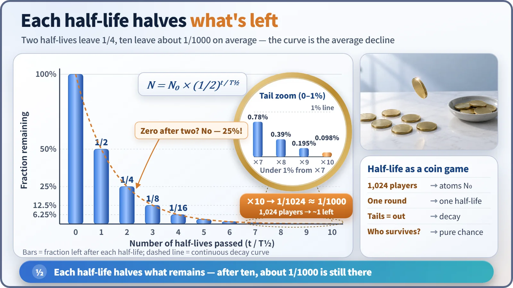
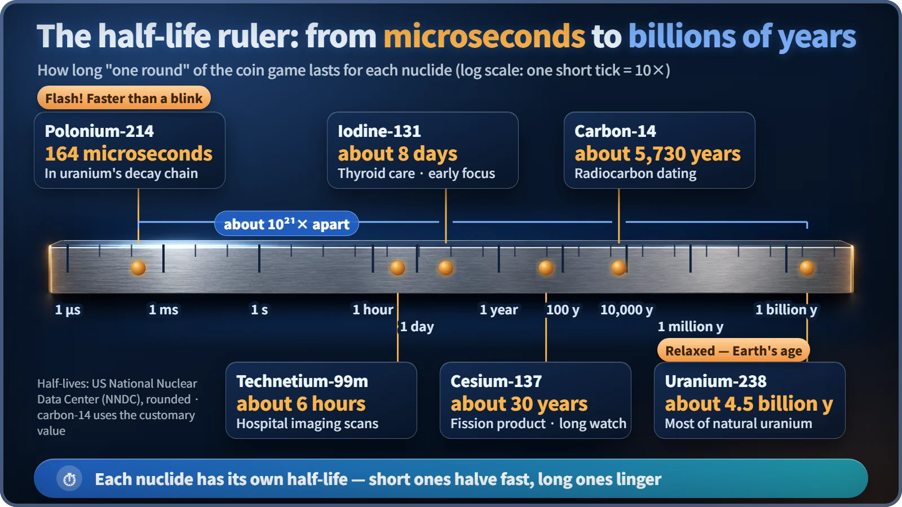

Nuclear & Radiation Basics · 015
Half-Life Explained with a Coin-Toss Elimination Game — How "Halving Time" Really Works
Nobody can say which atom decays next, but the time for half of them to go is remarkably constant.
A half-life is the time it takes for the number of atoms of a radioactive substance to fall by half. Each half-life removes half of what is left, not half of the original amount, so two half-lives leave 25% and ten leave about one-thousandth. [1]
1,024 people flip a coin at once
Picture 1,024 people in a gym. When the whistle blows, everyone flips a coin. Heads, you stay. Tails, you're out. Then you repeat, round after round.
After the first round, about 512 are left; after the second, about 256; after the third, about 128. Here's the interesting part: nobody can say who will survive, yet you can predict quite accurately how many will. Each player is an unstable nucleus, tails is a decay, and the time one round takes is the half-life.
Half-life in one sentence
The half-life of a radioactive substance is the time it takes for the number of its atoms to fall by half. When a single nucleus decays is pure chance, but with an enormous number of atoms the time for "half of what's left" to disappear becomes remarkably constant.
The key words are "of what's left." Each time, half of whatever remains at that moment disappears. That's why only 256 people drop out in the second round, not 512.
N = N₀ × (1/2)^(t/T½)
N₀ is the starting number of atoms, t is the elapsed time, T½ is the half-life, and N is what's left after time t. Since t/T½ counts how many half-lives have passed, three half-lives leave (1/2)³ = 1/8. And a half-life barely changes whether you heat the material, squeeze it, or bind it chemically. It's a number the nuclide carries from birth. [2]

The "two rounds and it's gone" trap
"Half disappears, then the other half... so after two it's all gone, right?" No. After two half-lives you have half of a half, so 25% is left. After three, 12.5%; after four, 6.25%.
A handy rule of thumb: ten half-lives leave about one-thousandth. Since 2 multiplied by itself ten times is 1,024, precisely 1/1,024 ≈ 0.098% remains: one survivor out of 1,024 on average. The amount first drops below 1% at the seventh half-life (0.78%).
Even so, it doesn't hit zero. A single gram of material holds atoms on the order of 10²¹, so a thousandth of that is still a huge number. That's why nuclear professionals don't say something is "gone"; they say how far it "has dropped."
From under a millisecond to 4.5 billion years per round
The length of one round varies wildly from one nuclide to another.
| Nuclide | Half-life | Where you meet it |
|---|---|---|
| Polonium-214 | about 164 microseconds | a brief step in uranium's decay chain |
| Technetium-99m | about 6 hours | hospital nuclear-medicine scans; doesn't linger in the body |
| Iodine-131 | about 8 days | thyroid treatment; watched closely early in a nuclear accident |
| Cesium-137 | about 30 years | fission product; the reason monitoring runs for decades |
| Carbon-14 | about 5,730 years | the clock of radiocarbon dating |
| Uranium-238 | about 4.5 billion years | comparable to Earth's age; about half the original amount remains |

From microseconds to billions of years, that's a spread of nearly 10²¹ times. Just hearing a half-life tells you whether a nuclide is the "flash and gone" type or the "slow and lingering" type. [3] [4]
The short-lived ones are the noisy ones
"A longer half-life must mean more dangerous, right?" Radioactivity, the number of decays per second, is A = λN, where N is the number of atoms and λ (lambda) is the decay constant, the probability that one atom decays per unit time: λ = ln2 / T½ ≈ 0.693 / T½. A shorter half-life means a bigger λ, so for the same number of atoms, the shorter-lived nuclide decays far more often. Atom for atom, iodine-131 is about 1,400 times more active than cesium-137, but it fades that much faster. A long half-life means weak but long-lasting.
That's why you can't call something dangerous or safe from its half-life alone; the type and energy of the radiation and how the substance behaves inside the body matter too.
Back to the coin game
Half-life is the time for the remaining amount to halve, and each time it's half of what's left that goes. Two half-lives leave 1/4; ten leave about 1/1,000. One round lasts anywhere from microseconds to billions of years, and the shorter it is, the more actively the same amount decays. How long spent fuel must be managed, why different substances matter right after an accident and years later, why hospitals pick particular isotopes: every one of these questions starts with this round clock.